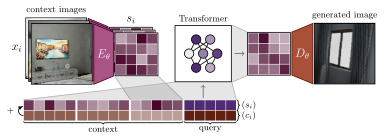

Novel view synthesis is a long-standing problem. In this work, we consider a variant of the problem where we are given only a few context views sparsely covering a scene or an object. The goal is to predict novel viewpoints in the scene, which requires learning priors. The current state of the art is based on Neural Radiance Fields (NeRFs). While achieving impressive results, NeRF-based approaches suffer from long training times as they require evaluating thousands of 3D point samples via a deep neural network for each image. We propose a simple 2D-only method that maps context views and a query pose to a new image in a single pass of a neural network. Our model uses a two-stage architecture consisting of a codebook and a transformer model. The codebook is used to embed individual images into a smaller latent space, and the transformer solves the view synthesis task in this more compact space.  To train our model efficiently, we introduce a novel branching attention mechanism that allows us to use the same model not only for neural rendering but also for camera pose estimation. Experimental results on real-world scenes show that our approach is competitive compared to NeRF-based methods while not reasoning in 3D, and it is faster to train.
In this section we present the qualitative results for the Common Objects in 3D (CO3D) dataset [1]. In the video, we show the model trained on all ten classes used in [1]. Notice how the quality of the generated image improves with increasing context size.
We also present the results on the ShapeNet dataset. ViewFormer is compared with PixelNeRF method [4].
In this section we present the qualitative results for the InteriorNet dataset [2]. Notice that some details in the image are lost because the model is not able to represent the scene perfectly.
The 7-Scenes dataset [3] was used primarily to evaluate the performance of camera pose estimation (results given in the paper). However, we also show qualitative results for the novel view synthesis task. In this case, the model was overfitting the training data, which resulted in lower quality of the generated images. We show images from all seven scenes.
@inproceedings{kulhanek2022viewformer,
title={ViewFormer: NeRF-free Neural Rendering from Few Images Using Transformers},
author={Kulh{\'a}nek, Jon{\'a}{\v{s}} and Derner, Erik and Sattler, Torsten and Babu{\v{s}}ka, Robert},
booktitle={European Conference on Computer Vision (ECCV)},
year={2022},
}